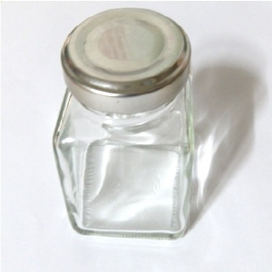
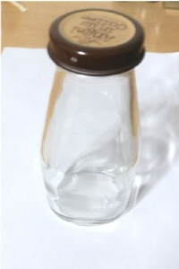
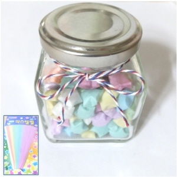
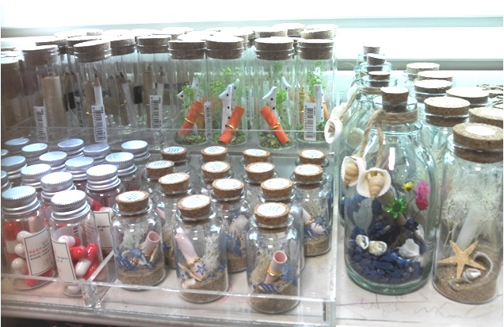

2. 유리병 리폼
 Before
음료를 사 마신 후 남은 유리병들.
평소에는 그저 버려졌을테지만 간단한 작업에 의해 변화를 하게 됩니다.
 
After
첫 번째 사진에서는 병 옆의 '파스텔별'이라는 이름의 종이를 접어 별을 만들어 유리병에 담았습니다.
유리병의 투명함을 이용한 리폼이지요.
그리고 끈을 통해 리본을 만들어 묶어 완성했어요!
두 번째 사진에서는 잡지에서 오린 그림을 뚜껑에 붙였고, 마스킹 테이프로 병의 몸통을 둘렀습니다.
마스킹 테이프가 예쁘게 붙여지지 않아서 남겨두었던 작은 리본 하나를 순간접착제로 붙여서 완성!

★이 사진은 핫트랙스에서 찍었습니다.★
유리병 안에다 작은 쪽지와 함께 장식을 한 것인데요,
제가 직접 만들진 않았지만 '이렇게도 리폼을 할 수 있겠다'는 생각이 들었어요!
이처럼 유리병은 그 안에 장식품을 넣어서 평소 밋밋했던 공간에 생기를 불어넣어준답니다~
▲▲▲